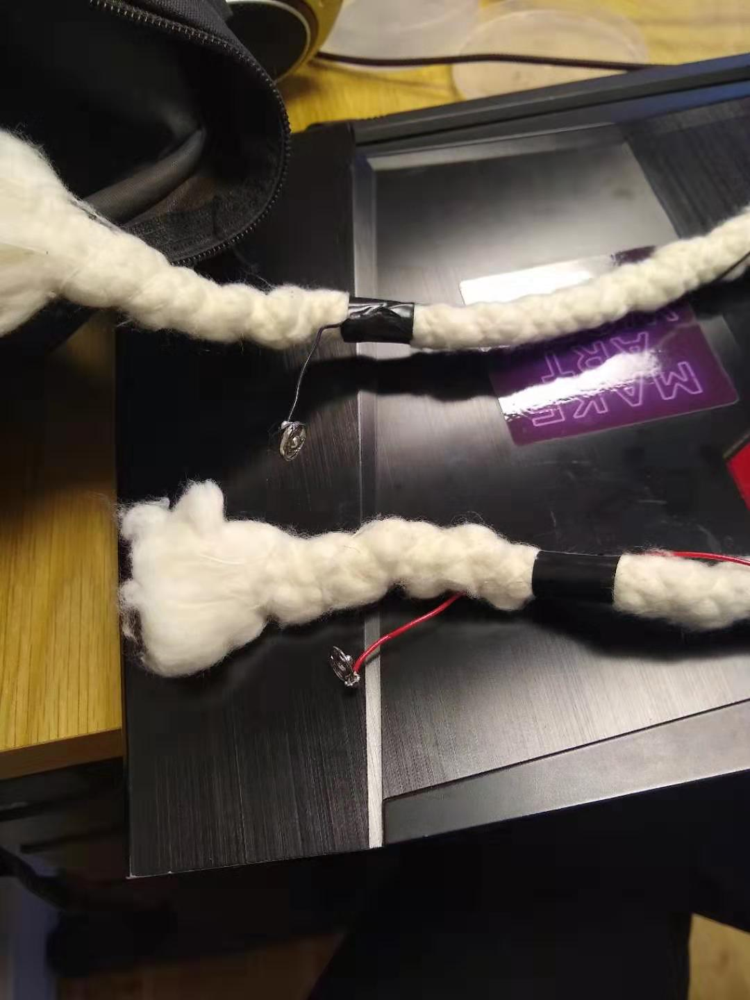
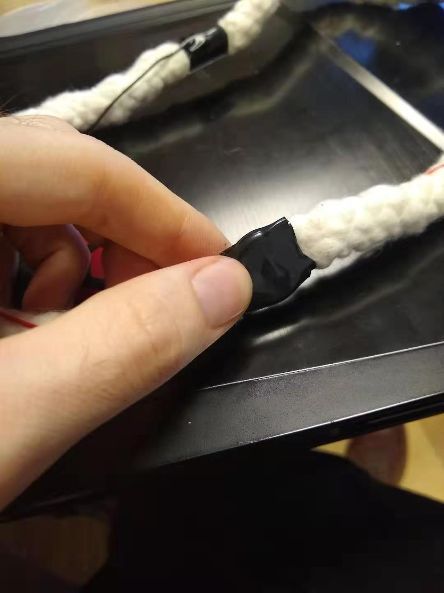

For this lab, there was a lot of playing around on the breadboard, with a focus on making switches. This was a lot of fun, and gave me an intuitive understanding of how electrical flow worked that I definitely didn't have before.
For the end of the lab, we were asked to get creative with switches, and I immediately knew what I wanted to do. I'd made a flashlight headband in intro to fabrication, but the one problem with it is that there wasn't really an on or off switch. The only way to turn it on was to literally stick the wires into the battery. However, now that I understood wiring a little better, I wanted to improve my flashlight headband.
One of the original ideas I'd had for the headband was to have it light up when the band was tied, possibly using conductive tape. However, after trying some conductive tape, it didn't work well. My classmate Tina had some button snaps left over from her own project, and I thought that I could use those instead of the magnetic tape to complete the current. I soldered the snaps to my wires so I could snap them together after the headband was tied, which completed the circuit, and tied the battery around one side of the headband with electrical tape, with the negative and positive ends touching the right sides of the battery.
As it turns out, because of the fabric of the rope I also needed to apply pressure to the battery and wires in order to get the light turned on. So, in the end, I accidentally gave my flashlight two switches instead of one. Either way, I added a switch to my headband, which was my original goal, so I was happy.
 